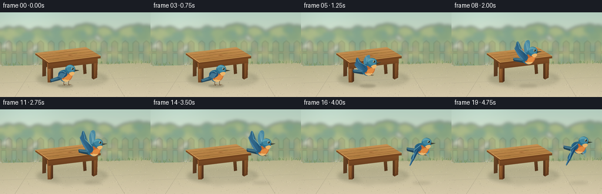
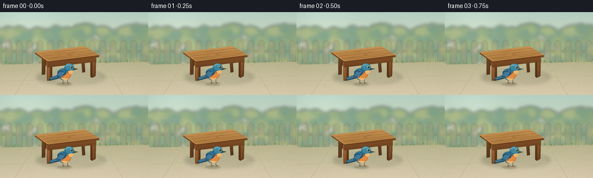

CODING AGENTS AS PIXEL WORLD MODELS
traex/GPT-6.1-Sol · dynamic_spatial_relationship_0042
点击播放 · 原生 RGB 像素
逐轮保存的候选
回放视频、检查图与代码变化。
每份候选均可单独播放。实际图片检查记录在下方工具轨迹中。
候选 01播放与检查图
点击播放 · 原生 RGB 像素


展开代码变化
--- 上一保存版本
+++ 本次保存版本
@@ -0,0 +1,230 @@
+from pathlib import Path
+import math, json
+import numpy as np
+from PIL import Image, ImageDraw, ImageFilter
+import artifact_io
+
+ROOT = Path(__file__).resolve().parent
+SPEC = json.loads((ROOT/'task_spec.json').read_text())
+W,H = SPEC['width'],SPEC['height']
+S=4
+SZ=(W*S,H*S)
+rng=np.random.default_rng(28)
+
+def polygon(draw, pts, fill): draw.polygon([(round(x*S),round(y*S)) for x,y in pts],fill=fill)
+def line(draw,pts,fill,width=1): draw.line([(round(x*S),round(y*S)) for x,y in pts],fill=fill,width=max(1,round(width*S)),joint='curve')
+def ellipse(draw, box, fill, outline=None, width=1): draw.ellipse(tuple(round(v*S) for v in box),fill=fill,outline=outline,width=max(1,round(width*S)))
+
+def bezier(points,n=35):
+ out=[]
+ for t in np.linspace(0,1,n):
+ if len(points)==4:
+ p=(1-t)**3*np.array(points[0])+3*t*(1-t)**2*np.array(points[1])+3*t*t*(1-t)*np.array(points[2])+t**3*np.array(points[3])
+ else:
+ p=(1-t)**2*np.array(points[0])+2*(1-t)*t*np.array(points[1])+t*t*np.array(points[2])
+ out.append(tuple(p))
+ return out
+
+def shape(draw,segments,fill):
+ pts=[]
+ for s in segments: pts+=bezier(s)
+ polygon(draw,pts,fill)
+
+def shade_shape(img,pts,color1,color2,light=(0.3,0.2)):
+ mask=Image.new('L',SZ); md=ImageDraw.Draw(mask);polygon(md,pts,255)
+ x0,y0=np.min(pts,axis=0);x1,y1=np.max(pts,axis=0)
+ yy,xx=np.mgrid[:H*S,:W*S]
+ v=np.clip((yy/S-y0)/max(y1-y0,1)*.78+(xx/S-x0)/max(x1-x0,1)*.22,0,1)
+ a=np.array(color1)[None,None,:]*(1-v[:,:,None])+np.array(color2)[None,None,:]*v[:,:,None]
+ img.paste(Image.fromarray(a.astype('uint8')), (0,0),mask)
+
+# Soft sunlight and a secluded garden provide a quiet, consistent setting.
+yy,xx=np.mgrid[:H*S,:W*S]
+y=yy/S;x=xx/S
+sky=np.zeros((H*S,W*S,3),float)
+for i,(top,bottom) in enumerate(zip((184,211,197),(234,227,193))): sky[:,:,i]=top+(bottom-top)*np.minimum(y/110,1)
+sky+= (np.exp(-((x-45)**2+(y-18)**2)/3000)*12)[:,:,None]
+bg=Image.fromarray(np.uint8(np.clip(sky,0,255)))
+fol=Image.new('RGBA',SZ);d=ImageDraw.Draw(fol)
+for j in range(250):
+ cx=float(rng.uniform(-20,280));cy=float(rng.uniform(28,91));r=float(rng.uniform(3,14))
+ c=rng.choice(4)
+ colors=[(89,128,83,145),(122,150,93,160),(150,165,98,155),(64,113,85,130)]
+ ellipse(d,(cx-r,cy-r*.8,cx+r,cy+r*.8),colors[c])
+fol=fol.filter(ImageFilter.GaussianBlur(3*S));bg=Image.alpha_composite(bg.convert('RGBA'),fol).convert('RGB')
+# low, distant fence softly resolves through the foliage
+fence=Image.new('RGBA',SZ);d=ImageDraw.Draw(fence)
+for fx in range(-8,267,18):
+ polygon(d,[(fx,52),(fx+5,48),(fx+10,52),(fx+10,89),(fx,89)],(153,145,113,70))
+line(d,[(0,68),(256,68)],(155,145,110,90),3)
+fence=fence.filter(ImageFilter.GaussianBlur(.85*S));bg=Image.alpha_composite(bg.convert('RGBA'),fence).convert('RGB')
+# Sandy limestone patio, with a warm perspective gradient.
+patio=Image.new('RGB',SZ)
+a=np.zeros((H*S,W*S,3),float)
+v=np.clip((y-87)/57,0,1)
+for i,(c0,c1) in enumerate(zip((186,181,143),(220,207,176))):a[:,:,i]=c0+(c1-c0)*v
+noise=rng.normal(0,1.15,(H*S,W*S));a+=noise[:,:,None]
+patio=Image.fromarray(np.uint8(np.clip(a,0,255)))
+mask=Image.new('L',SZ);d=ImageDraw.Draw(mask);polygon(d,[(0,91),(256,86),(256,144),(0,144)],255)
+bg.paste(patio,(0,0),mask)
+d=ImageDraw.Draw(bg)
+line(d,[(0,120),(256,110)],(180,172,145),.45)
+line(d,[(59,91),(25,144)],(183,174,146),.5)
+line(d,[(179,89),(212,144)],(184,175,147),.5)
+for j in range(600):
+ px=float(rng.uniform(0,256));py=float(rng.uniform(91,144));r=float(rng.uniform(.09,.38))
+ ellipse(d,(px-r,py-r/2,px+r,py+r/2),tuple(rng.choice([(170,163,136),(228,216,188),(202,192,165)])))
+# grass at the rear edge
+for j in range(120):
+ px=float(rng.uniform(0,256));py=90-px*.016+float(rng.uniform(-1.7,1.8));height=float(rng.uniform(1,5))
+ line(d,[(px,py),(px+float(rng.uniform(-2,2)),py-height)],tuple(rng.choice([(112,137,79),(144,151,86),(91,127,78)])),.45)
+# Soft cast shadow of the table.
+sh=Image.new('RGBA',SZ);d=ImageDraw.Draw(sh)
+ellipse(d,(62,100,183,126),(47,55,35,53));polygon(d,[(79,100),(149,97),(182,116),(111,130)],(43,49,34,25))
+sh=sh.filter(ImageFilter.GaussianBlur(3*S));bg=Image.alpha_composite(bg.convert('RGBA'),sh).convert('RGB')
+
+# Table: four solid legs, rails, a plank top with physically consistent perspective.
+# rear legs first
+shade_shape(bg,[(72,73),(79,74),(78,108),(72,109)],(113,76,41),(84,53,30))
+shade_shape(bg,[(139,70),(145,70),(147,104),(142,105)],(121,79,43),(82,50,26))
+d=ImageDraw.Draw(bg)
+polygon(d,[(76,84),(146,77),(147,85),(78,93)],(93,58,30))
+# front legs tapered and bevelled
+shade_shape(bg,[(80,83),(87,85),(87,119),(81,119)],(169,110,57),(111,65,31))
+shade_shape(bg,[(87,85),(90,84),(90,117),(87,119)],(104,62,32),(73,44,25))
+shade_shape(bg,[(159,78),(166,76),(165,111),(159,114)],(142,89,44),(94,56,30))
+shade_shape(bg,[(156,79),(159,78),(159,114),(156,112)],(97,61,30),(78,47,25))
+d=ImageDraw.Draw(bg)
+line(d,[(83,90),(84,116)],(186,127,67),.5)
+line(d,[(162,83),(161,109)],(162,105,55),.4)
+# wide front apron
+shade_shape(bg,[(81,83),(166,75),(166,86),(82,96)],(147,90,43),(95,57,29))
+d=ImageDraw.Draw(bg)
+line(d,[(84,86),(162,78)],(186,121,60),.7)
+line(d,[(84,92),(161,83)],(118,70,33),.5)
+# top thickness edge, then honey wood surface
+shade_shape(bg,[(60,72),(83,88),(171,78),(171,74),(83,84),(60,69)],(136,82,37),(103,60,28))
+shade_shape(bg,[(60,69),(146,59),(171,74),(83,85)],(207,156,91),(166,111,54))
+d=ImageDraw.Draw(bg)
+# planks across depth; mapped parallel grain
+A=np.array([60.,69.]);B=np.array([146.,59.]);C=np.array([171.,74.]);D=np.array([83.,85.])
+for v0 in [.25,.5,.75]:
+ p=A*(1-v0)+D*v0;q=B*(1-v0)+C*v0
+ line(d,[p,q],(130,85,40),.7)
+ line(d,[p+np.array([0,.5]),q+np.array([0,.5])],(221,169,99),.4)
+for j in range(58):
+ v0=float(rng.uniform(.02,.97));u0=float(rng.uniform(.03,.80));ln=float(rng.uniform(.05,.32))
+ pts=[]
+ for u0x in np.linspace(u0,min(.97,u0+ln),14):
+ v1=v0+.003*math.sin(u0x*40+j)
+ p=(A*(1-u0x)+B*u0x)*(1-v1)+(D*(1-u0x)+C*u0x)*v1;pts.append(p)
+ line(d,pts,(int(rng.integers(147,181)),int(rng.integers(97,129)),int(rng.integers(49,65))),.23)
+line(d,[(60,69),(83,85),(171,74)],(229,179,109),.7)
+line(d,[(61,70),(83,86),(170,75)],(118,72,33),.4)
+# knot embedded in the grain
+for rr in [1,.7,.35]:
+ pts=[(119+4*rr*math.cos(t),73+.75*rr*math.sin(t)-.12*4*rr*math.cos(t)) for t in np.linspace(0,2*math.pi,50)]
+ line(d,pts,(152,101,49),.27)
+
+# Bird local geometry. Supersampling gives clean feather detail and soft edges.
+def bird(img,bx,by,flight,phase,tilt=0):
+ layer=Image.new('RGBA',SZ);dr=ImageDraw.Draw(layer)
+ ca,sa=math.cos(tilt),math.sin(tilt)
+ def T(p):
+ px,py=p;return (bx+ca*px-sa*py,by+sa*px+ca*py)
+ def P(ps,c):polygon(dr,[T(p) for p in ps],c)
+ def L(ps,c,w=1):line(dr,[T(p) for p in ps],c,w)
+ def E(box,c):
+ a,b,cx,e=box
+ P([( (a+cx)/2+(cx-a)/2*math.cos(t), (b+e)/2+(e-b)/2*math.sin(t)) for t in np.linspace(0,2*math.pi,64)],c)
+ def B(ss,c):
+ pts=[]
+ for s in ss: pts+=bezier(s)
+ P(pts,c)
+ if flight:
+ # Far wing is lighter and reaches behind the head.
+ lift=math.sin(phase)
+ root=(1,-4);tip=(5-5*lift,-10-22*lift)
+ B([[root,(3,-12),(tip[0]+10,tip[1]-3),tip], [tip,(-7,tip[1]+4),(-9,-5),root]],(75,138,162,255))
+ for k in range(5):
+ L([root,(tip[0]+k*1.4-3,tip[1]+k*1.5)],(119,173,186,255),.5)
+ # Tail fan, long slate-blue rectrices, pointing left.
+ P([(-6,1),(-26,0 if flight else 9),(-25,4 if flight else 13),(-9,9)],(35,70,90,255))
+ P([(-7,1),(-26,-2 if flight else 8),(-23,2 if flight else 11),(-6,6)],(60,110,132,255))
+ L([(-24,1 if flight else 10),(-10,4)],(112,157,171,255),.6)
+ if not flight:
+ for lx in [-2,6]:
+ L([(lx,8),(lx-.7,16),(lx+1,18)],(98,70,45,255),.8)
+ L([(lx-.7,16),(lx+4,17)],(113,77,44,255),.7)
+ L([(lx+1,18),(lx-3,18.3)],(98,67,42,255),.6)
+ else:
+ L([(-1,9),(2,12),(7,11)],(106,69,39,255),.8)
+ L([(3,10),(6,13),(9,12)],(94,65,37,255),.7)
+ # rounded body, blue mantle and copper breast
+ B([[(-12,-2),(-9,-10),(4,-10),(9,-5)],[(9,-5),(15,0),(9,10),(1,12)],[(1,12),(-7,13),(-12,6),(-12,-2)]],(41,105,136,255))
+ B([[(-5,-4),(4,-5),(11,-6),(12,-1)],[(12,-1),(13,5),(8,11),(1,12)],[(1,12),(-6,12),(-8,5),(-5,-4)]],(196,105,49,255))
+ B([[(0,2),(5,0),(10,-1),(11,1)],[(11,1),(11,6),(6,10),(0,11)],[(0,11),(-3,7),(-2,3),(0,2)]],(226,139,64,255))
+ B([[(0,8),(4,10),(7,8),(7,9)],[(7,9),(4,13),(-3,13),(-6,8)],[(-6,8),(-4,8),(-2,8),(0,8)]],(235,189,120,255))
+ # neck into round head
+ E((0,-17,17,-1),(45,111,139,255))
+ E((2,-16,16,-5),(63,135,160,255))
+ B([[(1,-11),(2,-18),(11,-18),(15,-12)],[(15,-12),(11,-15),(5,-13),(1,-11)]],(93,162,178,255))
+ B([[(6,-3),(12,-6),(17,-6),(15,-1)],[(15,-1),(11,3),(9,2),(6,-3)]],(238,182,106,255))
+ # Eye and beak give clear rightward gaze.
+ E((10.2,-12.4,14.4,-8.2),(202,195,144,255))
+ E((10.8,-12,14.1,-8.6),(18,32,35,255))
+ E((11.1,-11.6,12.25,-10.4),(251,255,240,255))
+ P([(16,-9.3),(24,-7.5),(16,-5.6)],(55,57,46,255))
+ P([(16,-9.3),(24,-7.5),(17,-7.4)],(99,104,82,255))
+ L([(17,-7.4),(23,-7.5)],(26,40,35,255),.4)
+ # Near wing is attached at the shoulder, feathers fan as it flaps.
+ if flight:
+ lift=math.sin(phase)
+ root=(-2,-5)
+ tip=(-15,-6-27*lift)
+ elbow=(-13,-7-11*lift)
+ B([[root,(-9,-10),elbow,tip],[tip,(-23,tip[1]+5),(-16,5),(-5,6)],[(-5,6),(0,4),(1,-1),root]],(38,91,126,255))
+ for k in range(7):
+ end=(-15-k*1.12,tip[1]+k*1.75)
+ start=(-3-k*.75,0+k*.55)
+ B([[start,(-11-k*.5,-2-9*lift), (end[0]+3,end[1]+3),end],[end,(end[0]-.5,end[1]+2),(-10-k*.6,6),start]],(48+k*3,106+k*3,139+k*3,255))
+ L([start,(end[0]+1,end[1]+1)],(26,74,111,255),.4)
+ L([root,elbow,tip],(114,178,191,255),.7)
+ else:
+ B([[(-9,-5),(-2,-8),(5,-4),(3,1)],[(3,1),(0,5),(-8,8),(-14,5)],[(-14,5),(-11,2),(-13,-1),(-9,-5)]],(34,83,117,255))
+ for k in range(5):
+ L([(-7+k*1.8,-3+k*.3),(-12+k*1.7,4+k*.5)],(90+k*3,147+k*2,169+k*2,255),.7)
+ L([(-9,-5),(-4,-6),(1,-3)],(104,169,186,255),.8)
+ # A handful of fine contour feathers preserve an organic silhouette.
+ for k in range(4):L([(-7+k*2,8),(-6+k*2,10)],(204,140,78,255),.35)
+ img=Image.alpha_composite(img.convert('RGBA'),layer).convert('RGB')
+ return img
+
+frames=[]
+for i in range(SPEC['frames']):
+ # A short established foreground pose, a hop and takeoff, then traversal to the right.
+ if i<4:
+ bx=111+.25*i;by=106-.25*math.sin(i*1.4);flying=False;phase=0;tilt=0
+ else:
+ u=(i-4)/15
+ ease=u*u*(3-2*u)
+ bx=112+104*ease
+ by=106-42*(1-math.exp(-u*4.7))+1.2*math.sin(u*11)
+ flying=True;phase=(i-4)*1.95+.6;tilt=-.14*(1-u)
+ im=bg.copy()
+ shadow=Image.new('RGBA',SZ);sd=ImageDraw.Draw(shadow)
+ ht=106-by
+ rx=13+ht*.065
+ alpha=int(64-ht*.8)
+ ellipse(sd,(bx-rx,125-2.6,bx+rx,125+2.6),(64,59,39,max(16,alpha)))
+ shadow=shadow.filter(ImageFilter.GaussianBlur((1.1+ht*.025)*S))
+ im=Image.alpha_composite(im.convert('RGBA'),shadow).convert('RGB')
+ im=bird(im,bx,by,flying,phase,tilt)
+ # Mild optical falloff, no camera motion or changes to scene layout.
+ ar=np.asarray(im).astype(float)
+ vign=np.clip(1-.065*((xx/(W*S)-.5)**2+(yy/(H*S)-.5)**2),.95,1)
+ ar*=vign[:,:,None]
+ im=Image.fromarray(np.uint8(np.clip(ar,0,255))).resize((W,H),Image.Resampling.LANCZOS)
+ frames.append(np.asarray(im))
+artifact_io.save(np.stack(frames),ROOT)
+print('Saved',len(frames),'RGB frames')
候选 02播放与检查图
点击播放 · 原生 RGB 像素

展开代码变化
--- 上一保存版本
+++ 本次保存版本
@@ -228,3 +228,7 @@
frames.append(np.asarray(im))
artifact_io.save(np.stack(frames),ROOT)
print('Saved',len(frames),'RGB frames')
+# Encode a convenient playback copy using the locally installed codec.
+import subprocess
+import imageio_ffmpeg
+subprocess.run([imageio_ffmpeg.get_ffmpeg_exe(), '-hide_banner', '-loglevel', 'error', '-y', '-framerate', str(SPEC['fps']), '-i', str(ROOT/'frames/%02d.png'), '-c:v', 'libx264', '-pix_fmt', 'yuv420p', '-movflags', '+faststart', str(ROOT/'video.mp4')], check=True)
可观测工具轨迹
实际执行的命令与返回图片。
命令 1exit 0
/bin/bash -lc 'ls -la && cat prompt.txt && cat GENERATION_RULES.md && cat task_spec.json'
命令 2exit 0
/bin/bash -lc "cat artifact_io.py && python - <<'PY' import PIL, numpy print(PIL.__version__) PY"
命令 3exit 1
/bin/bash -lc "cat > generate.py <<'PY'
from pathlib import Path
import math, json
import numpy as np
from PIL import Image, ImageDraw, ImageFilter
import artifact_io
ROOT = Path(__file__).resolve().parent
SPEC = json.loads((ROOT/'task_spec.json').read_text())
W,H = SPEC['width'],SPEC['height']
S=4
SZ=(W*S,H*S)
rng=np.random.default_rng(28)
def polygon(draw, pts, fill): draw.polygon([(round(x*S),round(y*S)) for x,y in pts],fill=fill)
def line(draw,pts,fill,width=1): draw.line([(round(x*S),round(y*S)) for x,y in pts],fill=fill,width=max(1,round(width*S)),joint='curve')
def ellipse(draw, box, fill, outline=None, width=1): draw.ellipse(tuple(round(v*S) for v in box),fill=fill,outline=outline,width=max(1,round(width*S)))
def bezier(points,n=35):
out=[]
for t in np.linspace(0,1,n):
if len(points)==4:
p=(1-t)**3*np.array(points[0])+3*t*(1-t)**2*np.array(points[1])+3*t*t*(1-t)*np.array(points[2])+t**3*np.array(points[3])
else:
p=(1-t)**2*np.array(points[0])+2*(1-t)*t*np.array(points[1])+t*t*np.array(points[2])
out.append(tuple(p))
return out
def shape(draw,segments,fill):
pts=[]
for s in segments: pts+=bezier(s)
polygon(draw,pts,fill)
def shade_shape(img,pts,color1,color2,light=(0.3,0.2)):
mask=Image.new('L',SZ); md=ImageDraw.Draw(mask);polygon(md,pts,255)
x0,y0=np.min(pts,axis=0);x1,y1=np.max(pts,axis=0)
yy,xx=np.mgrid[:H*S,:W*S]
v=np.clip((yy/S-y0)/max(y1-y0,1)*.78+(xx/S-x0)/max(x1-x0,1)*.22,0,1)
a=np.array(color1)[None,None,:]*(1-v[:,:,None])+np.array(color2)[None,None,:]*v[:,:,None]
img.paste(Image.fromarray(a.astype('uint8')), (0,0),mask)
# Soft sunlight and a secluded garden provide a quiet, consistent setting.
yy,xx=np.mgrid[:H*S,:W*S]
y=yy/S;x=xx/S
sky=np.zeros((H*S,W*S,3),float)
for i,(top,bottom) in enumerate(zip((184,211,197),(234,227,193))): sky[:,:,i]=top+(bottom-top)*np.minimum(y/110,1)
sky+= (np.exp(-((x-45)**2+(y-18)**2)/3000)*12)[:,:,None]
bg=Image.fromarray(np.uint8(np.clip(sky,0,255)))
fol=Image.new('RGBA',SZ);d=ImageDraw.Draw(fol)
for j in range(250):
cx=float(rng.uniform(-20,280));cy=float(rng.uniform(28,91));r=float(rng.uniform(3,14))
c=rng.choice(4)
colors=[(89,128,83,145),(122,150,93,160),(150,165,98,155),(64,113,85,130)]
ellipse(d,(cx-r,cy-r*.8,cx+r,cy+r*.8),colors[c])
fol=fol.filter(ImageFilter.GaussianBlur(3*S));bg=Image.alpha_composite(bg.convert('RGBA'),fol).convert('RGB')
# low, distant fence softly resolves through the foliage
fence=Image.new('RGBA',SZ);d=ImageDraw.Draw(fence)
for fx in range(-8,267,18):
polygon(d,[(fx,52),(fx+5,48),(fx+10,52),(fx+10,89),(fx,89)],(153,145,113,70))
line(d,[(0,68),(256,68)],(155,145,110,90),3)
fence=fence.filter(ImageFilter.GaussianBlur(.85*S));bg=Image.alpha_composite(bg.convert('RGBA'),fence).convert('RGB')
# Sandy limestone patio, with a warm perspective gradient.
patio=Image.new('RGB',SZ)
a=np.zeros((H*S,W*S,3),float)
v=np.clip((y-87)/57,0,1)
for i,(c0,c1) in enumerate(zip((186,181,143),(220,207,176))):a[:,:,i]=c0+(c1-c0)*v
noise=rng.normal(0,1.15,(H*S,W*S));a+=noise[:,:,None]
patio=Image.fromarray(np.uint8(np.clip(a,0,255)))
mask=Image.new('L',SZ);d=ImageDraw.Draw(mask);polygon(d,[(0,91),(256,86),(256,144),(0,144)],255)
bg.paste(patio,(0,0),mask)
d=ImageDraw.Draw(bg)
line(d,[(0,120),(256,110)],(180,172,145),.45)
line(d,[(59,91),(25,144)],(183,174,146),.5)
line(d,[(179,89),(212,144)],(184,175,147),.5)
for j in range(600):
px=float(rng.uniform(0,256));py=float(rng.uniform(91,144));r=float(rng.uniform(.09,.38))
ellipse(d,(px-r,py-r/2,px+r,py+r/2),rng.choice([(170,163,136),(228,216,188),(202,192,165)]).tolist())
# grass at the rear edge
for j in range(120):
px=float(rng.uniform(0,256));py=90-px*.016+float(rng.uniform(-1.7,1.8));height=float(rng.uniform(1,5))
line(d,[(px,py),(px+float(rng.uniform(-2,2)),py-height)],tuple(rng.choice([(112,137,79),(144,151,86),(91,127,78)])),.45)
# Soft cast shadow of the table.
sh=Image.new('RGBA',SZ);d=ImageDraw.Draw(sh)
ellipse(d,(62,100,183,126),(47,55,35,53));polygon(d,[(79,100),(149,97),(182,116),(111,130)],(43,49,34,25))
sh=sh.filter(ImageFilter.GaussianBlur(3*S));bg=Image.alpha_composite(bg.convert('RGBA'),sh).convert('RGB')
# Table: four solid legs, rails, a plank top with physically consistent perspective.
# rear legs first
shade_shape(bg,[(72,73),(79,74),(78,108),(72,109)],(113,76,41),(84,53,30))
shade_shape(bg,[(139,70),(145,70),(147,104),(142,105)],(121,79,43),(82,50,26))
d=ImageDraw.Draw(bg)
polygon(d,[(76,84),(146,77),(147,85),(78,93)],(93,58,30))
# front legs tapered and bevelled
shade_shape(bg,[(80,83),(87,85),(87,119),(81,119)],(169,110,57),(111,65,31))
shade_shape(bg,[(87,85),(90,84),(90,117),(87,119)],(104,62,32),(73,44,25))
shade_shape(bg,[(159,78),(166,76),(165,111),(159,114)],(142,89,44),(94,56,30))
shade_shape(bg,[(156,79),(159,78),(159,114),(156,112)],(97,61,30),(78,47,25))
d=ImageDraw.Draw(bg)
line(d,[(83,90),(84,116)],(186,127,67),.5)
line(d,[(162,83),(161,109)],(162,105,55),.4)
# wide front apron
shade_shape(bg,[(81,83),(166,75),(166,86),(82,96)],(147,90,43),(95,57,29))
d=ImageDraw.Draw(bg)
line(d,[(84,86),(162,78)],(186,121,60),.7)
line(d,[(84,92),(161,83)],(118,70,33),.5)
# top thickness edge, then honey wood surface
shade_shape(bg,[(60,72),(83,88),(171,78),(171,74),(83,84),(60,69)],(136,82,37),(103,60,28))
shade_shape(bg,[(60,69),(146,59),(171,74),(83,85)],(207,156,91),(166,111,54))
d=ImageDraw.Draw(bg)
# planks across depth; mapped parallel grain
A=np.array([60.,69.]);B=np.array([146.,59.]);C=np.array([171.,74.]);D=np.array([83.,85.])
for v0 in [.25,.5,.75]:
p=A*(1-v0)+D*v0;q=B*(1-v0)+C*v0
line(d,[p,q],(130,85,40),.7)
line(d,[p+np.array([0,.5]),q+np.array([0,.5])],(221,169,99),.4)
for j in range(58):
v0=float(rng.uniform(.02,.97));u0=float(rng.uniform(.03,.80));ln=float(rng.uniform(.05,.32))
pts=[]
for u0x in np.linspace(u0,min(.97,u0+ln),14):
v1=v0+.003*math.sin(u0x*40+j)
p=(A*(1-u0x)+B*u0x)*(1-v1)+(D*(1-u0x)+C*u0x)*v1;pts.append(p)
line(d,pts,(int(rng.integers(147,181)),int(rng.integers(97,129)),int(rng.integers(49,65))),.23)
line(d,[(60,69),(83,85),(171,74)],(229,179,109),.7)
line(d,[(61,70),(83,86),(170,75)],(118,72,33),.4)
# knot embedded in the grain
for rr in [1,.7,.35]:
pts=[(119+4*rr*math.cos(t),73+.75*rr*math.sin(t)-.12*4*rr*math.cos(t)) for t in np.linspace(0,2*math.pi,50)]
line(d,pts,(152,101,49),.27)
# Bird local geometry. Supersampling gives clean feather detail and soft edges.
def bird(img,bx,by,flight,phase,tilt=0):
layer=Image.new('RGBA',SZ);dr=ImageDraw.Draw(layer)
ca,sa=math.cos(tilt),math.sin(tilt)
def T(p):
px,py=p;return (bx+ca*px-sa*py,by+sa*px+ca*py)
def P(ps,c):polygon(dr,[T(p) for p in ps],c)
def L(ps,c,w=1):line(dr,[T(p) for p in ps],c,w)
def E(box,c):
a,b,cx,e=box
P([( (a+cx)/2+(cx-a)/2*math.cos(t), (b+e)/2+(e-b)/2*math.sin(t)) for t in np.linspace(0,2*math.pi,64)],c)
def B(ss,c):
pts=[]
for s in ss: pts+=bezier(s)
P(pts,c)
if flight:
# Far wing is lighter and reaches behind the head.
lift=math.sin(phase)
root=(1,-4);tip=(5-5*lift,-10-22*lift)
B([[root,(3,-12),(tip[0]+10,tip[1]-3),tip], [tip,(-7,tip[1]+4),(-9,-5),root]],(75,138,162,255))
for k in range(5):
L([root,(tip[0]+k*1.4-3,tip[1]+k*1.5)],(119,173,186,255),.5)
# Tail fan, long slate-blue rectrices, pointing left.
P([(-6,1),(-26,0 if flight else 9),(-25,4 if flight else 13),(-9,9)],(35,70,90,255))
P([(-7,1),(-26,-2 if flight else 8),(-23,2 if flight else 11),(-6,6)],(60,110,132,255))
L([(-24,1 if flight else 10),(-10,4)],(112,157,171,255),.6)
if not flight:
for lx in [-2,6]:
L([(lx,8),(lx-.7,16),(lx+1,18)],(98,70,45,255),.8)
L([(lx-.7,16),(lx+4,17)],(113,77,44,255),.7)
L([(lx+1,18),(lx-3,18.3)],(98,67,42,255),.6)
else:
L([(-1,9),(2,12),(7,11)],(106,69,39,255),.8)
L([(3,10),(6,13),(9,12)],(94,65,37,255),.7)
# rounded body, blue mantle and copper breast
B([[(-12,-2),(-9,-10),(4,-10),(9,-5)],[(9,-5),(15,0),(9,10),(1,12)],[(1,12),(-7,13),(-12,6),(-12,-2)]],(41,105,136,255))
B([[(-5,-4),(4,-5),(11,-6),(12,-1)],[(12,-1),(13,5),(8,11),(1,12)],[(1,12),(-6,12),(-8,5),(-5,-4)]],(196,105,49,255))
B([[(0,2),(5,0),(10,-1),(11,1)],[(11,1),(11,6),(6,10),(0,11)],[(0,11),(-3,7),(-2,3),(0,2)]],(226,139,64,255))
B([[(0,8),(4,10),(7,8),(7,9)],[(7,9),(4,13),(-3,13),(-6,8)],[(-6,8),(-4,8),(-2,8),(0,8)]],(235,189,120,255))
# neck into round head
E((0,-17,17,-1),(45,111,139,255))
E((2,-16,16,-5),(63,135,160,255))
B([[(1,-11),(2,-18),(11,-18),(15,-12)],[(15,-12),(11,-15),(5,-13),(1,-11)]],(93,162,178,255))
B([[(6,-3),(12,-6),(17,-6),(15,-1)],[(15,-1),(11,3),(9,2),(6,-3)]],(238,182,106,255))
# Eye and beak give clear rightward gaze.
E((10.2,-12.4,14.4,-8.2),(202,195,144,255))
E((10.8,-12,14.1,-8.6),(18,32,35,255))
E((11.1,-11.6,12.25,-10.4),(251,255,240,255))
P([(16,-9.3),(24,-7.5),(16,-5.6)],(55,57,46,255))
P([(16,-9.3),(24,-7.5),(17,-7.4)],(99,104,82,255))
L([(17,-7.4),(23,-7.5)],(26,40,35,255),.4)
# Near wing is attached at the shoulder, feathers fan as it flaps.
if flight:
lift=math.sin(phase)
root=(-2,-5)
tip=(-15,-6-27*lift)
elbow=(-13,-7-11*lift)
B([[root,(-9,-10),elbow,tip],[tip,(-23,tip[1]+5),(-16,5),(-5,6)],[(-5,6),(0,4),(1,-1),root]],(38,91,126,255))
for k in range(7):
end=(-15-k*1.12,tip[1]+k*1.75)
start=(-3-k*.75,0+k*.55)
B([[start,(-11-k*.5,-2-9*lift), (end[0]+3,end[1]+3),end],[end,(end[0]-.5,end[1]+2),(-10-k*.6,6),start]],(48+k*3,106+k*3,139+k*3,255))
L([start,(end[0]+1,end[1]+1)],(26,74,111,255),.4)
L([root,elbow,tip],(114,178,191,255),.7)
else:
B([[(-9,-5),(-2,-8),(5,-4),(3,1)],[(3,1),(0,5),(-8,8),(-14,5)],[(-14,5),(-11,2),(-13,-1),(-9,-5)]],(34,83,117,255))
for k in range(5):
L([(-7+k*1.8,-3+k*.3),(-12+k*1.7,4+k*.5)],(90+k*3,147+k*2,169+k*2,255),.7)
L([(-9,-5),(-4,-6),(1,-3)],(104,169,186,255),.8)
# A handful of fine contour feathers preserve an organic silhouette.
for k in range(4):L([(-7+k*2,8),(-6+k*2,10)],(204,140,78,255),.35)
img=Image.alpha_composite(img.convert('RGBA'),layer).convert('RGB')
return img
frames=[]
for i in range(SPEC['frames']):
# A short established foreground pose, a hop and takeoff, then traversal to the right.
if i<4:
bx=111+.25*i;by=106-.25*math.sin(i*1.4);flying=False;phase=0;tilt=0
else:
u=(i-4)/15
ease=u*u*(3-2*u)
bx=112+104*ease
by=106-42*(1-math.exp(-u*4.7))+1.2*math.sin(u*11)
flying=True;phase=(i-4)*1.95+.6;tilt=-.14*(1-u)
im=bg.copy()
shadow=Image.new('RGBA',SZ);sd=ImageDraw.Draw(shadow)
ht=106-by
rx=13+ht*.065
alpha=int(64-ht*.8)
ellipse(sd,(bx-rx,125-2.6,bx+rx,125+2.6),(64,59,39,max(16,alpha)))
shadow=shadow.filter(ImageFilter.GaussianBlur((1.1+ht*.025)*S))
im=Image.alpha_composite(im.convert('RGBA'),shadow).convert('RGB')
im=bird(im,bx,by,flying,phase,tilt)
# Mild optical falloff, no camera motion or changes to scene layout.
ar=np.asarray(im).astype(float)
vign=np.clip(1-.065*((xx/(W*S)-.5)**2+(yy/(H*S)-.5)**2),.95,1)
ar*=vign[:,:,None]
im=Image.fromarray(np.uint8(np.clip(ar,0,255))).resize((W,H),Image.Resampling.LANCZOS)
frames.append(np.asarray(im))
artifact_io.save(np.stack(frames),ROOT)
print('Saved',len(frames),'RGB frames')
PY
python generate.py"命令 4exit 0
/bin/bash -lc "sed -i 's/rng.choice(\\[(170,163,136),(228,216,188),(202,192,165)\\]).tolist()/tuple(rng.choice([(170,163,136),(228,216,188),(202,192,165)]))/g' generate.py python generate.py"
命令 5exit 1
/bin/bash -lc 'command -v ffmpeg && ffmpeg -hide_banner -loglevel error -y -framerate 4 -i frames/%02d.png -c:v libx264 -pix_fmt yuv420p -movflags +faststart video.mp4 && ls -lh pixels.npz index.html video.mp4 inspection.png'
命令 6exit 0
/bin/bash -lc "python - <<'PY' import importlib.util for m in ['imageio_ffmpeg','cv2','av']: print(m, bool(importlib.util.find_spec(m))) PY"
命令 7exit 0
/bin/bash -lc "cat >> generate.py <<'PY' # Encode a convenient playback copy using the locally installed codec. import subprocess import imageio_ffmpeg subprocess.run([imageio_ffmpeg.get_ffmpeg_exe(), '-hide_banner', '-loglevel', 'error', '-y', '-framerate', str(SPEC['fps']), '-i', str(ROOT/'frames/%02d.png'), '-c:v', 'libx264', '-pix_fmt', 'yuv420p', '-movflags', '+faststart', str(ROOT/'video.mp4')], check=True) PY python generate.py ls -lh pixels.npz index.html video.mp4 inspection.png"
视觉工具实际返回图片 1

保存候选 2 份；完成命令 7 次；可验证图片返回 1 张。原始 API 响应与完整日志保留在本地。